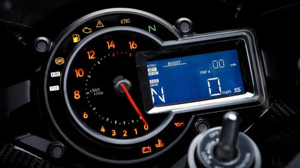
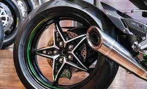
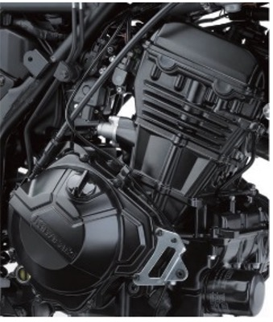

Racer
The Kawasaki H2R was a racing motorcycle built by Kawasaki from 1972 to 1974. It was based on the road going Kawasaki H2 Mach IV air cooled, two stroke triple. In 1975 it was replaced by a water cooled development, the Kawasaki KR750.
The Kawasaki Ninja H2R is a motorcycle that's designed for racing on tracks and is not legal to ride on public roads. Here are some things to know about the H2R's racing experience
The Kawasaki Ninja H2R is a supercharged motorcycle with a top speed of around 400 kmph. Here are some videos that show the H2R's speedometer effect.
The Kawasaki Ninja H2R has a maximum power of 305.75 brake horsepower (bhp) at 14,000 rpm
The Kawasaki Ninja H2R has a 998 cc, 4-stroke, in-line four engine. It's the world's first mass-produced motorcycle to use a mechanical centrifugal supercharger. Here are some other specifications for the Ninja H2R's engine
